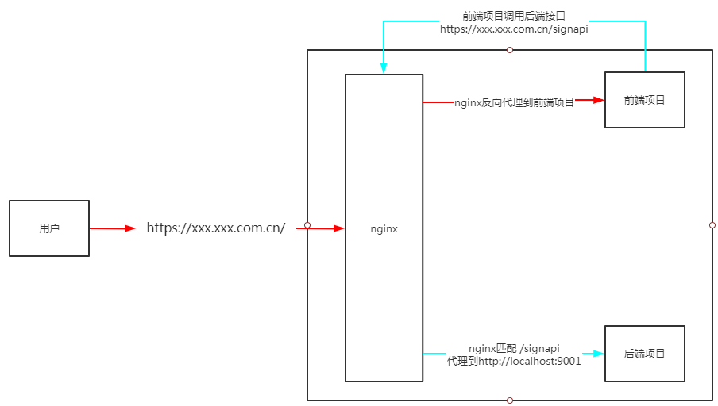

vue项目部署
项目
注：
当项目中涉及页面切换时：
当跳转至外部页面时，使用 window.open(“/SeparateSystem”, ‘_self’);
当进行组件跳转时，使用 this.$router.push({path: ‘/SeparateSystem’})
vue.config.js文件
修改配置项
1
2
3
4
5
| publicPath: './',
assetsDir: 'static',
outputDir: 'sign',
productionSourceMap:false,
lintOnSave: true,
|
全部配置项
1
2
3
4
5
6
7
8
9
10
11
12
13
14
15
16
17
18
19
20
21
22
23
24
25
26
27
28
29
30
31
32
33
34
35
36
37
38
39
40
41
| const path = require("path")
const webpack = require('webpack')
function resolve(dir) {
return path.join(__dirname, dir)
}
module.exports = {
publicPath: './',
assetsDir: 'static',
outputDir: 'sign',
productionSourceMap:false,
lintOnSave: true,
devServer: {
port: 3001,
host: process.env.HOST || '0.0.0.0',
https: false,
open: true,
hot: false,
inline:false,
proxy: {
'/api': {
target:'http://192.168.11.110:9001',
ws: true,
secure: false,
changOrigin: true,
pathRewrite: {
'^/api': ''
}
},
}
},
css: {
loaderOptions: {
sass: {
prependData: `@import "@/assets/css/variable.scss";`
}
}
}
}
|
router.js
修改 mode 为 hash
nginx
可直接将项目放置在服务器上
如：/usr/local/sign
然后在nginx中添加映射，主要配置
1
2
3
4
| location /sign {
alias /usr/local/sign;
autoindex on;
}
|
nginx所有配置
1
2
3
4
5
6
7
8
9
10
11
12
13
14
15
16
17
18
19
20
21
22
23
24
25
26
27
28
29
30
31
32
33
34
35
36
37
38
39
40
41
42
43
44
45
46
47
48
49
50
51
52
53
54
55
56
57
58
59
60
61
62
63
64
65
66
67
68
69
70
71
72
73
74
75
76
77
78
79
80
81
82
83
| worker_processes 1;
events {
worker_connections 1024;
}
http {
include mime.types;
default_type application/octet-stream;
keepalive_timeout 100;
sendfile on;
client_max_body_size 1000m;
upstream history_server {
server localhost:8080;
}
server {
listen 80;
server_name localhost;
location / {
root /usr/local/dist;
index index.html;
}
location /admin {
alias /usr/local/admin;
index index.html;
}
location /ydwy {
alias /usr/local/test;
index index.html;
}
location /images/ {
alias /opt/;
autoindex on;
}
location /sign {
alias /usr/local/sign;
autoindex on;
}
location /theChangeWithoutWorry {
rewrite ^/theChangeWithoutWorry/(.*) /$1 break;
proxy_pass http://history_server/;
}
location /TheChangeWithoutWorryAdmin {
rewrite ^/theChangeWithoutWorry/(.*) /$1 break;
proxy_pass http://history_server/;
}
proxy_set_header X-Forwarded-For $remote_addr;
proxy_set_header X-Real-IP $remote_addr;
proxy_set_header Host $host;
proxy_set_header Upgrade $http_upgrade;
proxy_set_header Connection "upgrade";
proxy_redirect off;
proxy_read_timeout 300;
if ( $request_method = OPTIONS ) {
return 200 '';
}
add_header "Access-Control-Allow-Origin" "*";
add_header "Access-Control-Allow-Methods" "GET, POST, OPTIONS, PUT, HEAD, PATCH, DELETE";
add_header "Access-Control-Allow-Headers" "Content-Type, Authorization, authorization, X-Requested-With, Session-Id, id";
error_page 500 502 503 504 /50x.html;
location = /50x.html {
root html;
}
}
}
|
vue代理设置
当vue 项目全局不存在以下设置时：
1
2
3
4
| import axios from 'axios'
|
其会经过 vue.config.js 中的 module.exports 的 proxy
1
2
3
4
5
6
7
8
9
10
11
12
13
14
15
16
17
18
19
20
21
22
23
24
25
26
27
28
29
30
31
32
33
34
35
| module.exports = {
publicPath: './',
assetsDir: 'static',
outputDir: 'sign',
productionSourceMap:false,
lintOnSave: true,
devServer: {
port: 3001,
host: process.env.HOST || '0.0.0.0',
https: false,
open: true,
hot: false,
inline:false,
proxy: {
'/': {
target: 'http://123.60.220.148:9001',
ws: true,
secure: false,
changOrigin: true,
pathRewrite: {
'^/': ''
}
},
}
},
css: {
loaderOptions: {
sass: {
prependData: `@import "@/assets/css/variable.scss";`
}
}
}
}
|
项目部署https和http问题
当前端项目如vue使用nginx代理的域名进行访问时，使用的协议为https：
前端项目访问路径https://xxx.xxx.com.cn/sign/#/login；
此时前端访问后端项目接口时就也得使用https协议访问：
后端项目与前段项目在一个服务器上部署；
后端接口路径为http://192.168.11.110:9001；
服务器nginx中添加代理：
1
2
3
4
| location /signapi {
rewrite ^/signapi/(.*) /$1 break;
proxy_pass http://localhost:9001/;
}
|
后端接口路径修改为https://xxx.xxx.com.cn/signapi/；
nginx会匹配 /signapi 并将其代理到服务器的 http://localhost:9001/
